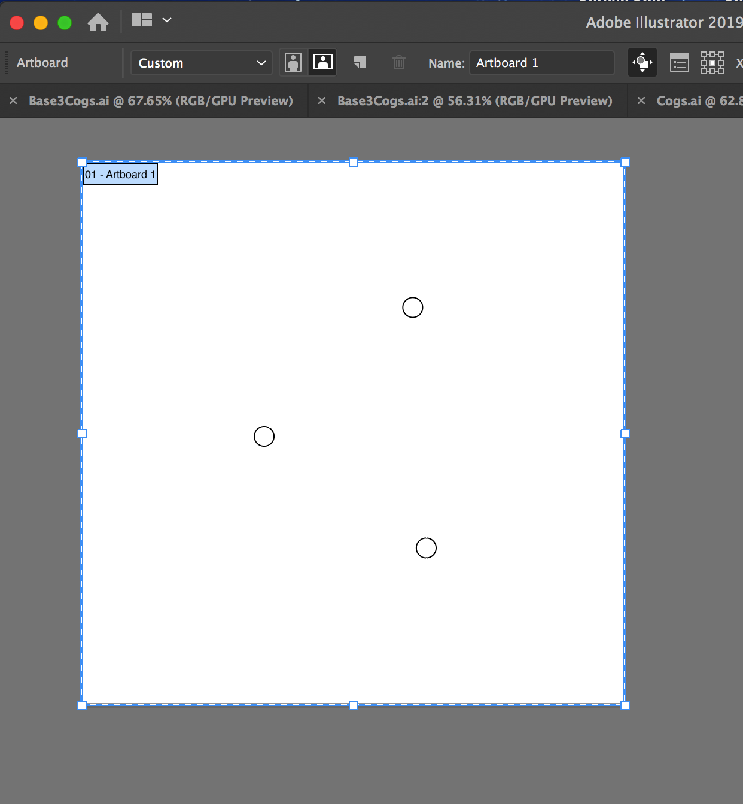
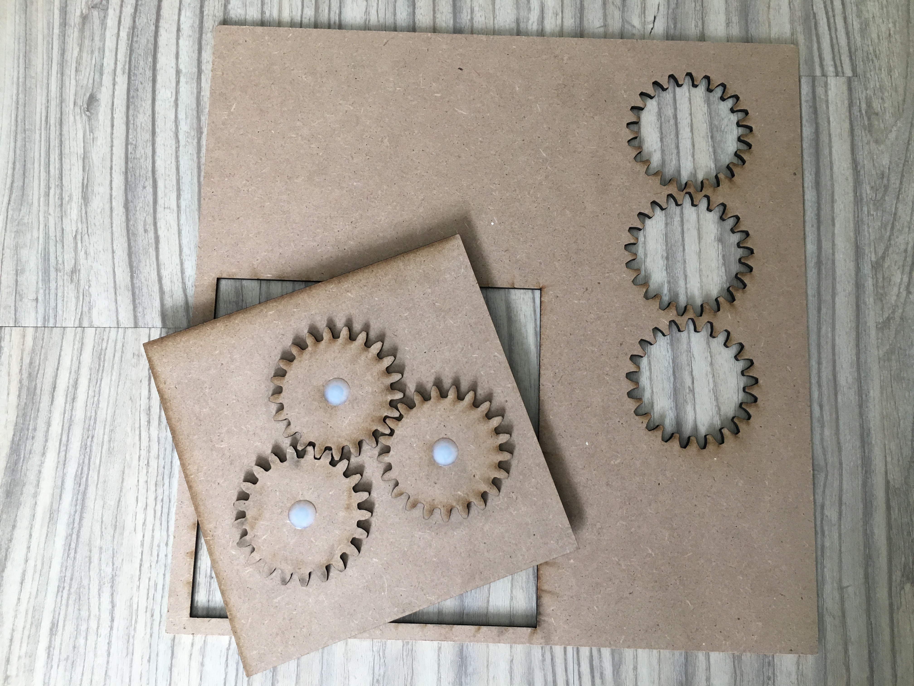

Moving Parts : OnShape
Native AI FileOnShape File

INSPIRATION
I love gear mechanisms—the above is my inspiration for the direction I took for this project.
However I didn't start here! I spent a few hours looking for moving parts concepts online and
found inspiration in a toy conveyer belt. I abandoned the project because of time and all the pieces
involved, but not before I created the below in OnShape. Building this actually helped me begin to
learn basic Onshape.


NEXT PLEASE
I abandoned the project because of time and all the pieces involved, but not before I created the
above using the revolve tool. Making this helped me begin to learn the basics Onshape.
Moving on to making moving gears instead!
SPUR GEAR IN ONSHAPE
I began with a open source file for a spur gear and then made changes to the overall size,
number of teeth, and extrusion height. I next measured the "pin" using a caliper and created a center
hole in the gear 2mm larger than the actual pin measurement to ensure the base would push through the opening.
BOTTOM UP: NEXT PIECE
Before beginning creating a base I sketched how the gears may relate when attached to a base.
I deliberately wanted to put the circles on square base because I liked juxtaposing the two simple shapes.
The sketch gave me the dimensions I needed for the base.
The tricky part was identifying exactly where the holes for attaching the 3 gears would be
positioned on the base, so that the gears would engage and move together. I learned that the
'pitch circle'diameter on a gear sketch specifies the point of contact between two gears.By using this
dimension I designed the relationship between the gears and was able to be exacting and confident
about where to place 3 holes for the gears.
3D to 2D
Next I converted my OnShape files to two dimension files by exporting as a DXF file.

I opened the DXF files in AI and prepped for laser cutting. At this point I am deciding what
materials to use. I end up choosing a compressed particle board: at $3 it fit my price point,
at 12x12" there would be little waste—AND-conceptually I liked the tone on tone solution.
LASER CUTTING
I set the laser cutter to speed 6 and power 100—and cut with no issues.

FINAL RESULT
The pieces fit snuggly—pins tight but still allowing pieces to move.

SHOUT OUT THANK YOU to colleague LEO for advising me to simplify my goals and Joshua for
educating me about the nuances of gear math!